How the Mjazo team edits the website, screen by screen: pages, services and prices, pictures, Urdu and SEO.
Welcome
Everything on the Mjazo website can be changed at mjazo.vercel.app/admin, no code needed: services and prices, every page, menus, the blog, help articles, legal text, pictures, SEO and the Urdu site. Customers see nothing until someone publishes.
The pictures in this handbook are real screens of the admin. The numbered circles on each one are explained in the list under it.
/admin with your email. Owners and Admins also type the code from their authenticator app (page 3).Your account
Go to mjazo.vercel.app/admin. New people get an invitation email from an Owner or Admin; open it, and you're in.
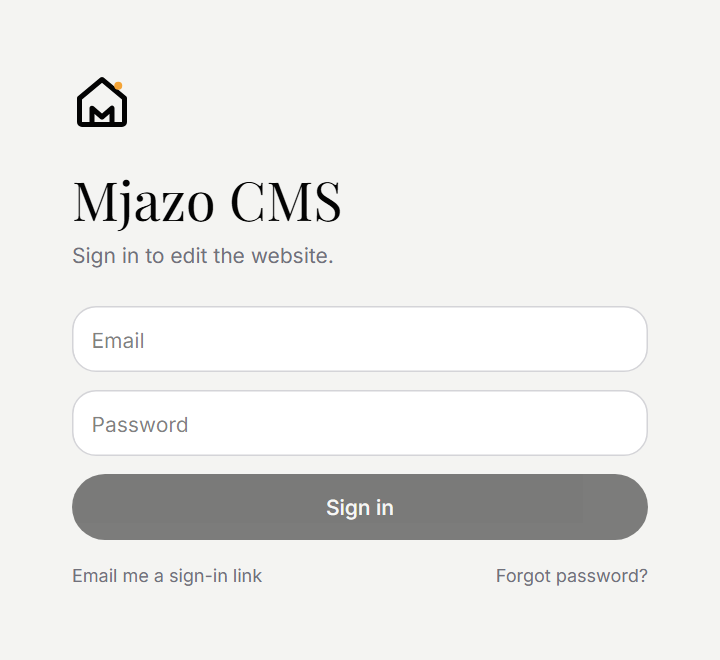
Links can take a few minutes to arrive. Ask for one, then wait: asking again and again slows them down.
Owners and Admins must use it; everyone else can turn it on under Account. You need an authenticator app on your phone: Google Authenticator, Microsoft Authenticator or 1Password.
Lost your phone? Ask an Owner to reset your two-step sign-in from People & roles, then set it up again on your new phone.
Never share your account or your codes. Everyone gets their own sign-in, so the activity log can show who changed what.
Your account
| Role | What they do | Publish | Prices & settings |
|---|---|---|---|
| Owner | Everything, including people, roles and restoring backups. | Yes | Yes |
| Admin | All content, prices, settings and publishing. Can invite people (not Owners). | Yes | Yes |
| Editor | Edit and publish content: pages, services, blog, help, menus. | Yes | No |
| Author | Write blog posts and help articles; an Editor publishes them. | Sends for review | No |
| SEO | SEO fields on every page, redirects and audits. | SEO only | No |
| Viewer | Looks around and previews; changes nothing. | No | No |
Fields your role can't change are greyed out. If you need one changed, ask someone whose role can.
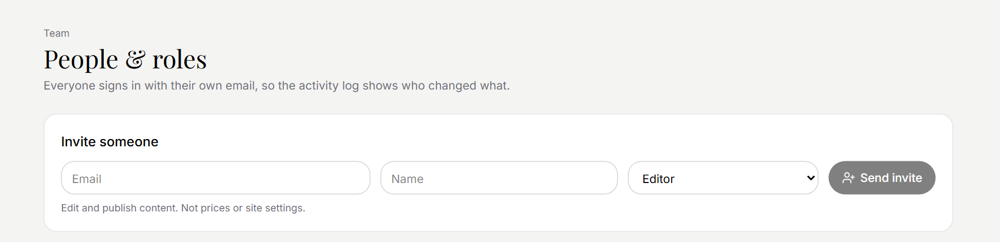
Below the form, the list shows everyone with access: their role, when they were last seen, and whether two-step sign-in is on. From there an Owner or Admin can change someone's role, switch their access off, or reset their two-step sign-in. Admins can't change Owners.
Finding your way
The first screen after signing in. It shows what needs you, and every part of the site you can edit.
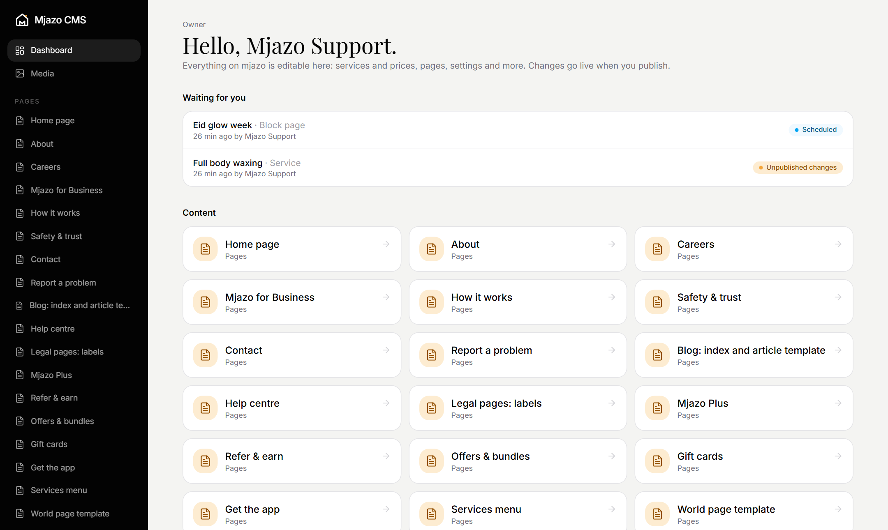
| Menu group | What's in it |
|---|---|
| Pages | Every page (home, about, offers, Plus…), the shared templates for world, category, service and area pages, and Block pages. |
| Catalogue | Worlds, categories, services, areas and bundles. Prices live here. |
| Blog · Help · Legal | Posts, help topics and the legal documents. |
| Navigation | Header and footer menus; buttons and labels used across the site. |
| Settings | Company and contact details, booking policy, Plus and referrals, feature switches, SEO settings, catalogue rules, search words. |
| Tools · Team | SEO, Redirects, Urdu translation · People & roles, Activity log, Backup. |
Finding your way
Catalogue items, posts, help topics and block pages each have a list. Click a row to edit it.
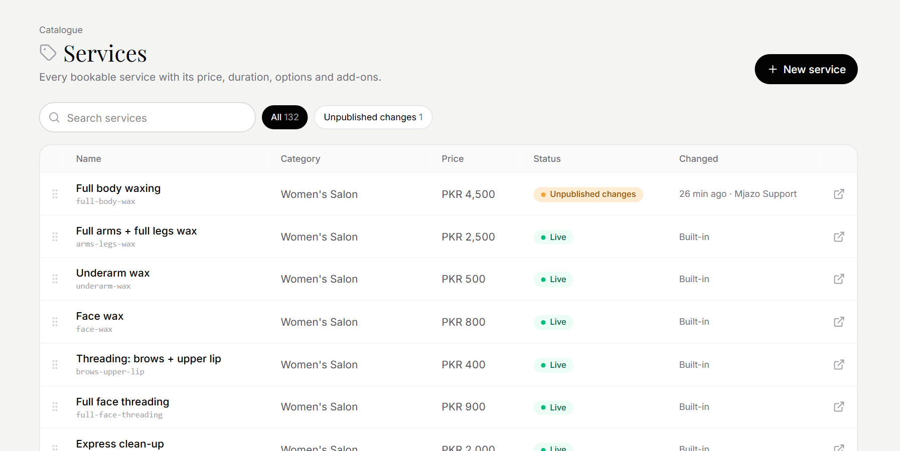
| Status | Customers see | What to do |
|---|---|---|
| Live | This version. Nothing is waiting. | Edit whenever you like. |
| Unpublished changes | The live version. Your edits wait in a draft. | Preview, then Publish, or Discard changes. |
| Draft | Nothing yet: it has never been published. | Finish it and Publish. |
| Scheduled | The live version until the time picked. | Nothing; it publishes by itself. |
| Nothing: it's off the site. | Restore to site to bring it back. |
Editing
Every item opens in the same editor: the form in the middle, the buttons at the top, and its status on the right.
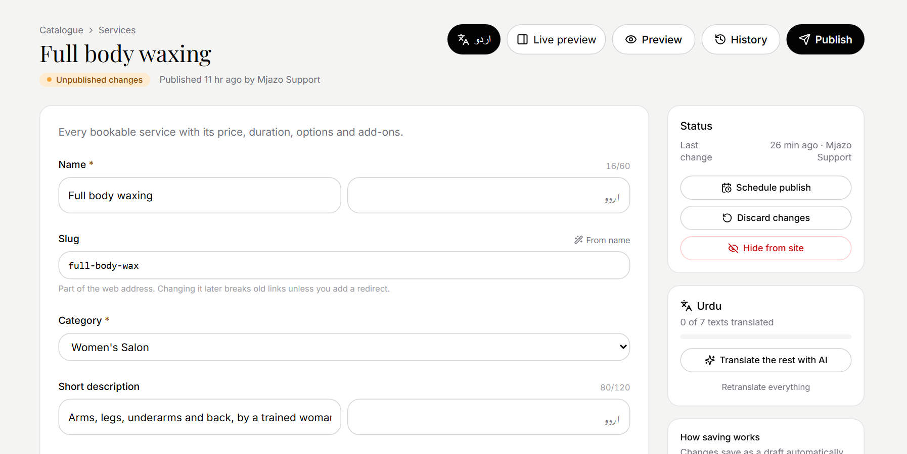
The small grey text under a field explains it, and counters like 16/60 show how long it can be. A red star marks fields that must be filled in.
Editing
A moment after you stop typing, your changes are saved as a draft. Close the tab and come back later; the draft waits for you. If you change something back to exactly what's live, the draft disappears and the item shows as Live again.
On a Mac, ⌘ S. It saves now and keeps this version in History, to come back to. Do it before a big rewrite.
Opens the real page with your draft in a new tab. Only you see it.
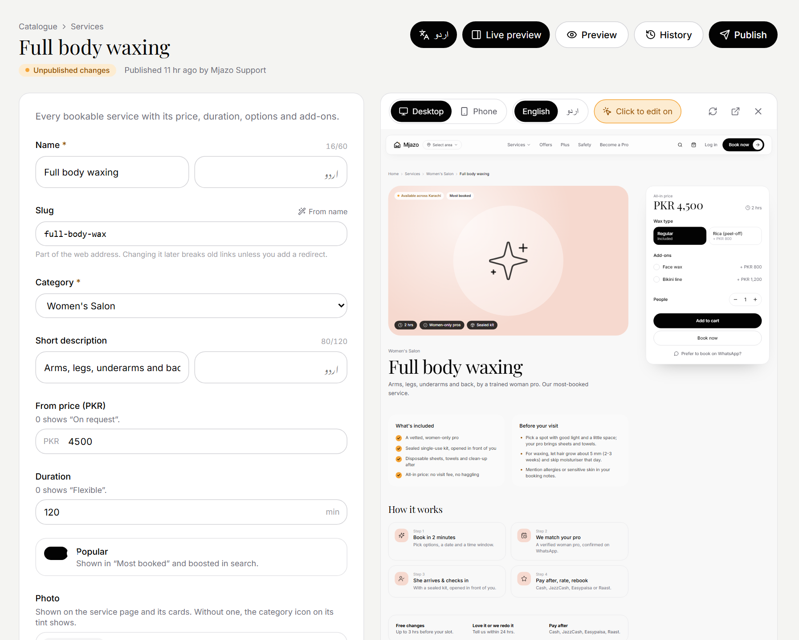
Editing
Puts your draft on the website straight away. Every publish is kept in History.
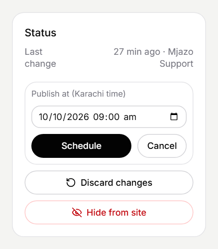
A scheduled item shows Goes live with the time, and a Cancel schedule button. If someone who can't publish edits it in the meantime, the schedule is cancelled, so nothing unchecked goes live.
Scheduling works once an Owner has finished setting it up; the Dashboard says if not.
Authors can't publish. Submit for review puts the draft on the Dashboard under Waiting for you for an Editor to check and publish.
Throws the draft away. The live version stays as it is.
Takes an item off the website, for example a service you've stopped offering. Restore to site brings it back.
If someone else saved the same item while you were editing, you get a warning instead of overwriting their work. Reload, then make your change again.
Nothing is lost
Click History in any editor. It lists every publish, every Ctrl S save, every restore and every import, with who did it and when.
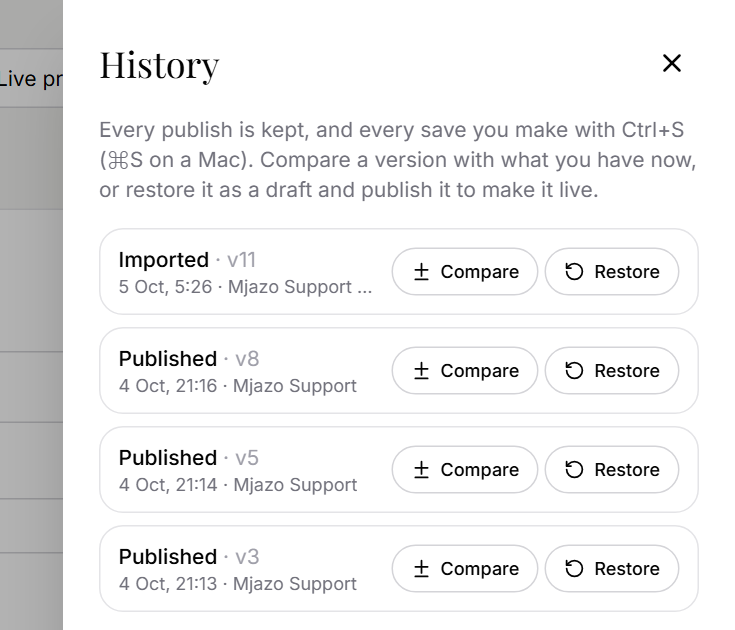
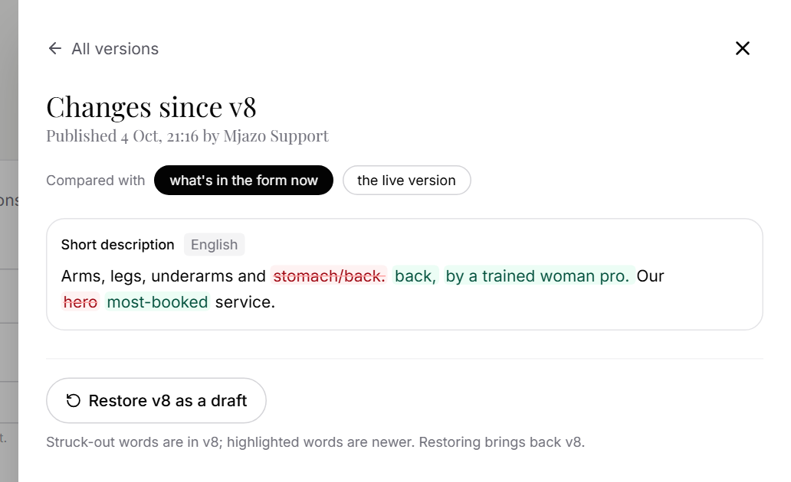
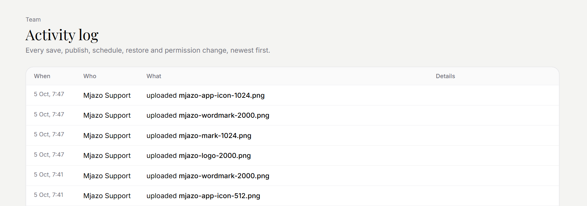
Nothing is lost
Team → Backup. Download one before big changes, and keep it somewhere private: it holds all the site's content.
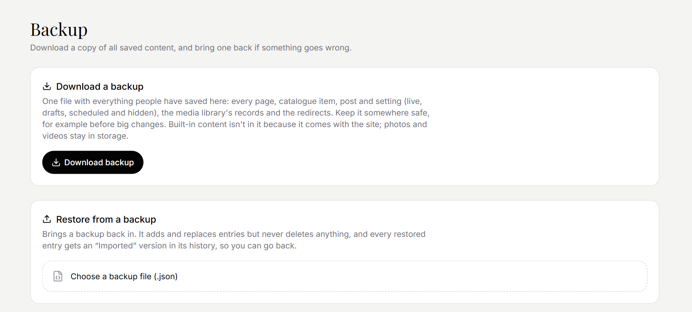
Every page, catalogue item, post and setting people have saved (live, drafts, scheduled and hidden), the media library's records and the redirects.
Not in it: the built-in content (it ships with the site) and the photo files themselves (they stay in storage).
Choose the file and check the summary it shows, then pick:
A restore never deletes anything. Entries that already match are left alone, and every restored entry gets an "Imported" version in its History.
Page builder
For a campaign, an event or a landing page: build a new page from ready-made blocks in Mjazo's style. Start with Pages → Block pages → New, give it a name and an address like /campaigns/eid-sale (lowercase, words joined with hyphens).
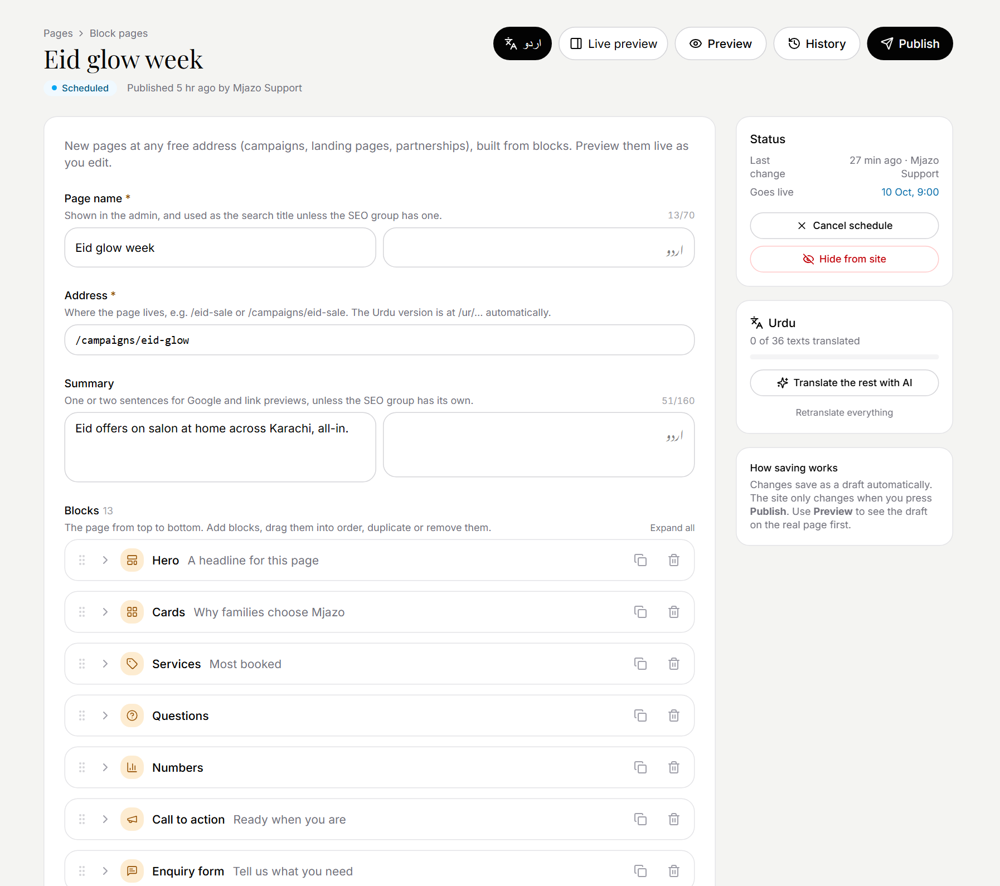
Change a published page's address and the old address redirects to the new one by itself.
Page builder
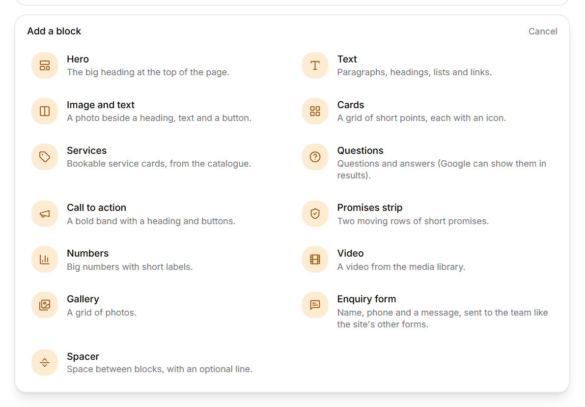
Add a block under the list (or the small + between two blocks, when you point at the gap) opens this choice. New blocks start with sample text to replace.
Turn on Live preview to watch the page take shape, then Publish.
*one word* of a headline in stars to make it the italic accent: A headline for this page.Pictures
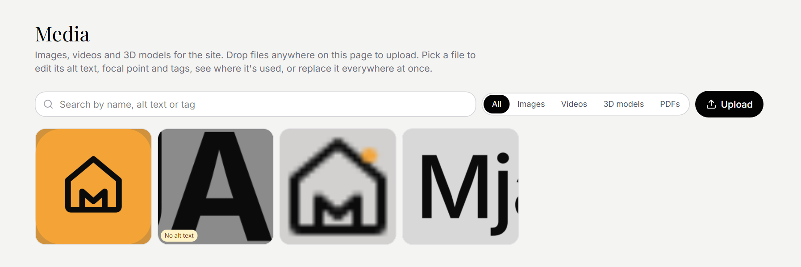
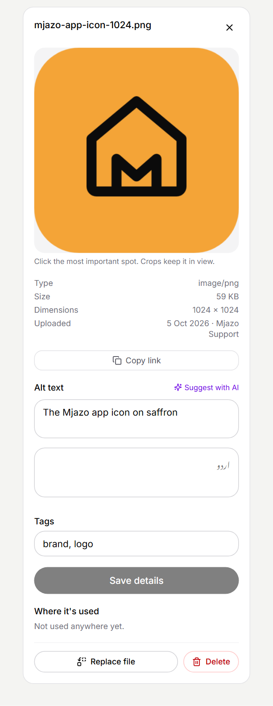
Click a picture to open its details:
Our pictures: real Karachi homes and real pros. Never retouch or lighten skin.
Urdu
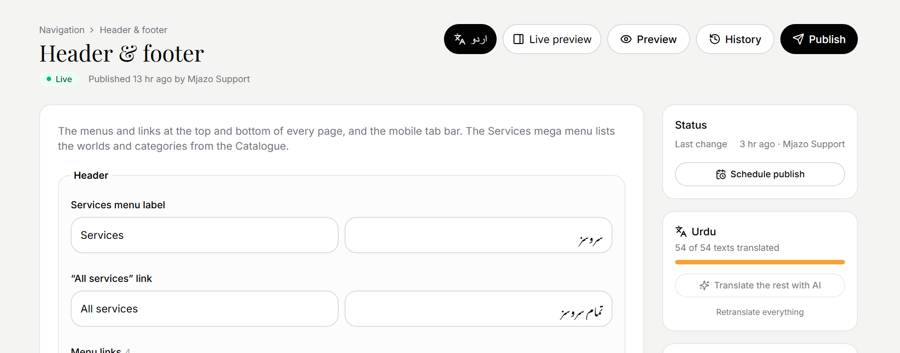
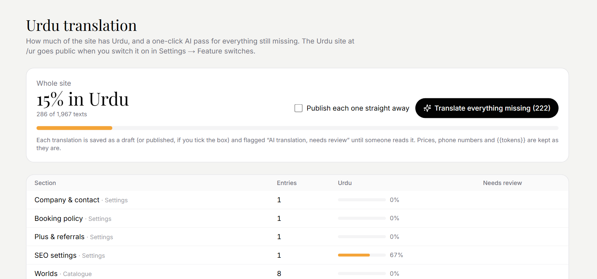
The Urdu site at /ur goes public when an Owner or Admin switches it on in Settings → Feature switches. Before that, a native speaker reads the Urdu, especially prices, policies and anything legal. Changing the English doesn't change the Urdu: update both.
Being found
Most items have an SEO section near the bottom of the form: how the page appears in Google and when its link is shared on WhatsApp. Empty fields use the page's own text.
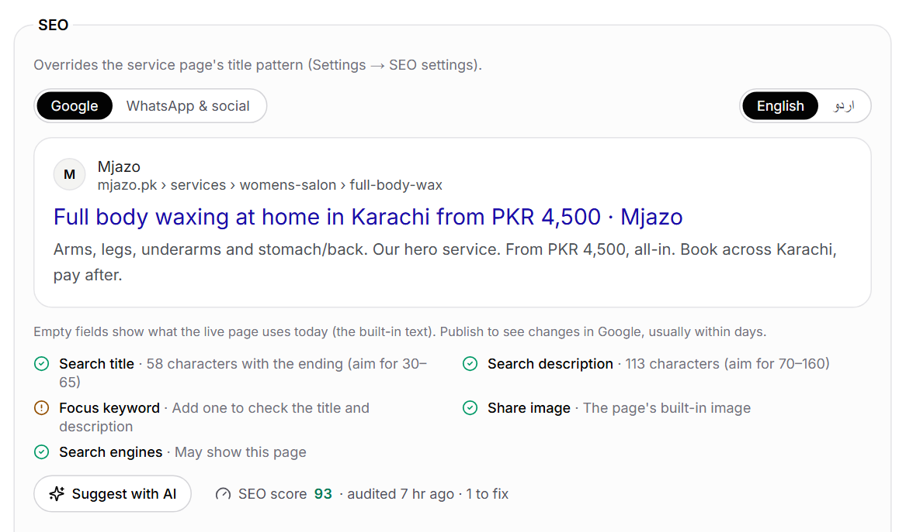
| Search title | Shown in Google and the browser tab, 30 to 60 characters. "· Mjazo" is added for you. |
| Search description | The grey text under the title in Google, 70 to 160 characters. |
| Focus keyword | The phrase the page should rank for, such as "waxing at home Karachi". The score checks it. |
| Share image | Shown when the link is shared. A JPG or PNG of 1200 × 630 works best. |
| Hide from search engines | For pages that shouldn't appear in Google. |
Being found
Tools → SEO. How every page scores in search, and what to fix first.
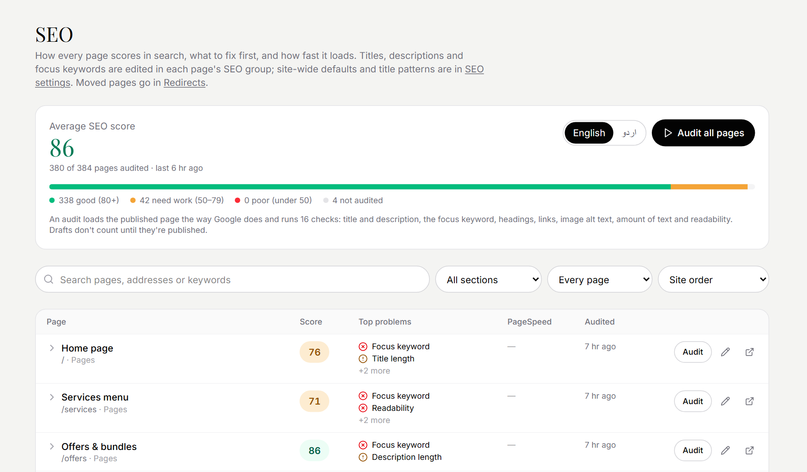
An audit reads the published page the way Google does and runs 16 checks: title and description, focus keyword, headings, links, image alt text, amount of text and readability. Drafts count once they're published. Once an Owner has switched it on, the whole site is checked again by itself every Monday.
Being found
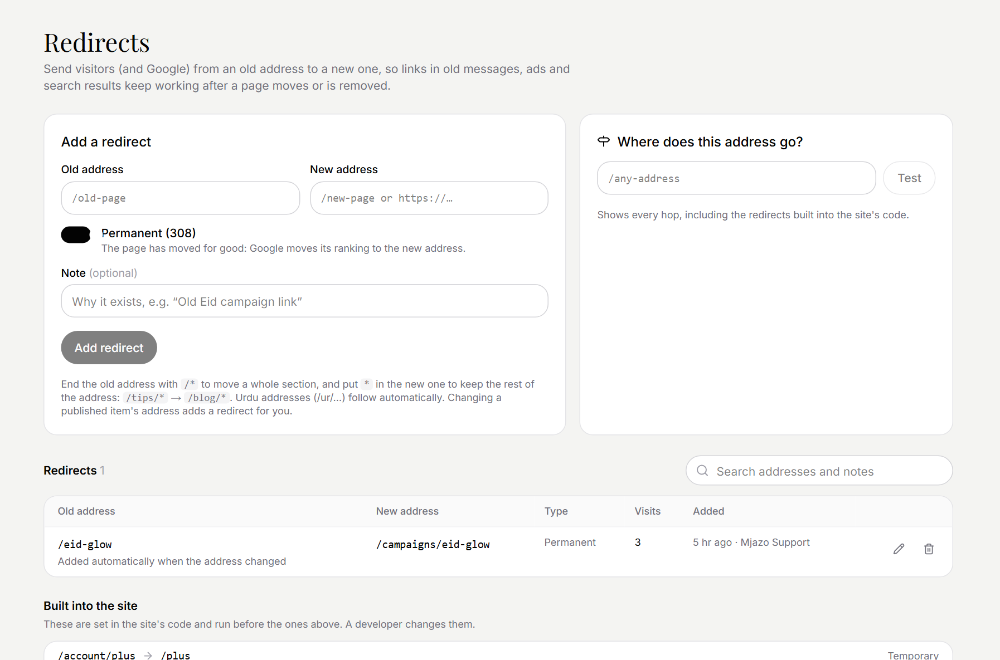
/eid.{{ … }}Some text holds placeholders the site fills in from Settings, so one change there updates the text everywhere. Keep the double braces exactly as they are.
{{catalog.serviceCount}} services · {{catalog.areaCount}} live areas · {{policy.freeChangeHours}} free-change hours · {{plus.priceText}} the Plus price.
*word*In headlines, one word in stars becomes the italic accent. Use it once per headline.
House style
Our lines
Everything your home needs. One tap.
Ghar ka har kaam. Pakka.
Verified pros for every corner of your Karachi home, at clear prices you pay after.
Real Karachi homes and real pros; soft, warm light. Never retouch or lighten skin. Every picture gets alt text that says what it shows.
One idea, said simply, with one accent word in italics: "Glow at home". The accent is saffron on light backgrounds; saffron is the only accent colour.
Write prices as PKR 4,500, with "from" when options change the price. Promises (free changes, redo, pay after) come from the booking policy placeholders, so they're always the same everywhere.
Help
| If… | Then |
|---|---|
| You published by mistake | History → Compare to find the right version → Restore → Publish. |
| A draft is a mess | Discard changes. The live version is untouched. |
| Something looks broken on the site | Undo the last publish from History, then tell an Admin what you changed (the activity log helps). |
| Many items went wrong at once | An Owner restores the last backup as drafts and publishes what's right. |
| A picture is wrong everywhere | Media → the picture → Replace file. |
| An old link shows "not found" | Tools → Redirects → add one from the old address to the new page. |
| You can't sign in | Use Forgot password? or Email me a sign-in link. Lost your phone? An Owner resets your two-step sign-in. |
| Your role can't change a field | Ask an Editor (content), an Admin (prices, settings) or an Owner (people, backups). |
| You saved over someone's work | You can't by accident: the editor warns you first. If it happened, History has their version. |
Questions? Ask an Owner: mjazosupport@gmail.com.